|
“Ásana” means “a position in which one feels comfortable” – “Sthirasukhamásanam.” Ásanas are a kind of exercise by regular practice of which the body stays healthy and hardy and many diseases are cured. But ásanas are not prescribed for the general cure of diseases; only those diseases which create trouble in the path of meditation may be cured by the help of specific ásanas, so that sádhaná may more easily be done.
The relation between the physical body and the mind is very close. Mental expression is brought about through the vrttis, and the predominance of the vrttis depends on different glands of the body. There are many glands in the body and from each there is a secretion of a particular hormone. If there is any defect in the secretion of hormones or any defect in a gland, certain vrttis become excited. For this reason, we find that in spite of having a sincere desire to follow the moral code, many persons cannot do so; they understand that they should do meditation, but they cannot concentrate their minds because their minds become extroverted due to the external excitement of this or that propensity. If a person wants to control the excitement of these propensities, he or she must rectify the defects of the glands. Ásanas help the sádhaka to a large extent in this task, so ásanas are an important part of sádhaná.
A list of ásanas is given below. The same ásanas are not necessary for everyone. There are more than 50,000 ásanas; among them a few are named here which are most necessary for the path of meditation. The ácárya will teach particular ásanas to a person according to his or her need.
There are many ásanas whose forms are similar to those of different animals, and therefore they are called by the names of those animals. And there are many characteristics found in animals and birds which are not commonly found in human beings: the physical structures of those animals and birds are such as to further certain glandular secretions, and as a result certain special qualities are developed.
The tortoise can easily retract its extremities. If human beings can also sit in that way for some time, they can withdraw their minds from the external world. The name of that posture is kúrmakásana (tortoise posture).
Rules for ásanas:
(1) Before practising ásanas, do vyápaka shaoca or take a full bath. Vyápaka shaoca must also be done before daily meditation; if ásanas are done with daily meditation then it is not necessary to do vyápaka shaoca separately.
(2) Do not practise ásanas in an open place, because it may result in sudden exposure and thereby you may catch cold. While practising ásanas indoors, attention should be paid to keep the windows open so that air can pass through.
(3) No smoke should be allowed to enter the room. The less smoke the better.
(4) Males must wear a Kaopiina (laungot́á), and there should be no other clothing on the body. Females must wear tight-fitting underwear and a bra.
(5) Practise ásanas on a blanket or a mat. Do not do ásanas on the bare ground, because you may catch cold, and some secretions which come from the body while practising ásanas may be destroyed.
(6) Practise ásanas only while breath is flowing through the left nostril or both nostrils; do not practise ásanas when the breath flows only through the right nostril.
(7) Take sáttvika food. But a person for whom it is difficult to give up rájasika food can for the time being take a small piece of myrobalan (it is better to use the small type of myrobalan), or something of a similar nature, after meals. However, this procedure does not apply in cold countries.
(8) Do not cut the hair of the joints of the body.
(9) The nails of the fingers and toes must be kept cut short.
(10) Do not practise ásanas on a full belly. It is prohibited to perform ásanas for two-and-a-half to three hours after a meal.
(11) After practising ásanas, you should massage your arms, legs and entire body, especially the joints, very well.
(12) After the massage is finished, remain in shavásana (corpse posture) for at least two minutes.
(13) After shavásana do not come in direct contact with water for at least ten minutes.
(14) A practitioner of ásanas should not massage his or her body with oil. If you like you may rub oil lightly over the body.
(15) After practising ásanas, it is desirable to walk in a solitary place for some time.
(16) Just after ásanas práńáyáma is prohibited.
(17) If it is necessary to go outdoors after practising ásanas and if at that time the body temperature has not come down to a normal level, or if there is any difference between the room temperature and the outside temperature, you must cover your body when going out. If possible, inhale a deep breath inside the room and exhale it after coming outside. In that way there will be no chance of catching cold.
(18) It is not prohibited for the practitioner of ásanas to practise free-hand exercise, running or sports, but just after ásanas all these are prohibited.
(19) There is no restriction of nostril for the following ásanas: padmásana (lotus posture), siddhásana (siddha posture), ardhasiddhásana (half siddha posture), bhojanásana (cross-legged sitting posture), viirásana (viira posture), diirgha prańáma (long bowing posture), yogásana (yoga posture) and bhújauṋgásana (snake posture).
(20) For all those ásanas where there is no restriction of nostrils, there is no restriction on food either.
(21) During menstruation, pregnancy and within one month of delivery, women must not practise ásanas or any other exercise. The ásanas for dhyána can be done under all conditions – padmásana, siddhásana and viirásana are the proper ásanas for dhyána and dhárańá.
List of ásanas (for illustrations, see bottom of page):
No one should risk harm by practising ásanas and mudrás without the permission of an ácárya.
(1) Sarváuṋgásana (all-limbs posture):
(a) Lie down on your back. Gradually raise the entire body and keep it straight, resting its weight on your shoulders. The chin must be in contact with the chest. Support both sides of your trunk with your hands. The toes must remain together; the eyes must be directed at the toes.
(b) Lie down in padmásana. Gradually raise the body and rest its weight on your shoulders. Support both sides with the hands. This ásana is also known as úrdhvapadmásana (inverted lotus posture).
Practise three times, up to five minutes each time.
(2) Matsyamudrá (fish posture): Lie down in padmásana. Rest the crown of the head on the floor and grasp both the big toes with the hands. Practise three times. Maximum time for practice is two-and-a-half minutes.
(3) Matsyásana (fish posture): Lie down in padmásana. Grasp each shoulder with the opposite hand from behind. The head will rest on both the forearms. Practise three times, each time for half a minute.
(4) Matsyendrásana (Matsyendra’s posture): generally for males:
(i) Press the múládhára cakra with the right heel. Cross the left foot over the right thigh and keep it to the right of the thigh. Grasp the left big toe with the right hand, keeping the right arm along the left side of the left knee. Reach backwards from the left side with the left hand and touch the navel.
Turn the neck to the left as far as possible.
(ii) Then press the múládhára with the left heel and reverse the process. One round means completing the process on both sides.
Practise four rounds, half a minute each time.
(5) Viirásana (viira posture): Kneel down and sit on the heels. Bend the toes downwards. Rest the backs of the hands on the thighs, the fingers pointing towards the groin. Direct the vision at the tip of the nose. The ácárya will give directions as to the duration of this ásana.
(6) Cakrásana (wheel posture): Lie in a supine position. Flex the legs to bring the lower legs in contact with the thighs. Both the hands will rest close to the shoulders. Supporting the weight on the soles and the palms, raise the head and the trunk. The body will assume the shape of a wheel in this ásana. Duration – half a minute. Practise four times.
(7) Naokásana (boat posture) or dhanurásana (bow posture): Lie in a prone position. Flex the legs to bring the lower legs close to the thighs. Directing the hands over the back, grasp the ankles. Raise the entire body, supporting the weight on the navel. Extend the neck and chest as far back as possible. Look towards the front. Breathe in while raising the body and maintain yourself in that state for eight seconds. Resume the original posture while breathing out. Practise the ásana eight times in this manner. The body assumes the shape of a bow during this ásana.
(8) Utkat́a pashcimottánásana (difficult back-upwards posture): Lie in a supine position and extend the arms backwards, keeping them close to the ears. Rise while exhaling and insert the face between the knees. Make sure that the legs remain straight. Grasp both the big toes with the hands. Remain in this state for eight seconds. Now resume the original posture while inhaling. Practise eight times in this way.
(9) Parvatásana (mountain posture) or halásana (plough posture): Assume the position of sarváuṋgásana. Gradually bring the legs backwards and extend them as far as possible. Let the toes of both feet touch the ground. Keep both the hands in a prone position on either side of the body. Duration – as in the case of sarváuṋgásana.
(10) Shivásana (Shiva posture): Assume the position of Parvatásana. Bend the knees until they come close to the ears. Do not place the hands as in parvatásana, but interlock the fingers firmly and keep the hands in contact with the ground. Duration – as for sarváuṋgásana.
(11) Vajrásana (thunder posture): Bend the right leg at the knee and direct the foot backwards, in such a way that it does not touch the right thigh. Supporting the weight on both the hands, direct the left foot backward in the same way. Now gradually sit on the floor. Raise the hands and place them on the knees. In the beginning practise this ásana very cautiously. Injury may result from trying to squat forcibly. Duration – half a minute. Practice four times.
(12) Siddhásana (siddha posture): Press the múládhára cakra with the left heel. Then press the svádhiśt́hána cakra with the right heel. Place the hands palm up on the respective knees. Duration – as long as you wish.
(13) Baddha padmásana (bound lotus posture): Assume the position of padmásana. Direct the right hand backwards from the right side and grasp the right big toe. In the same way, direct the left hand backwards and grasp the left big toe. Duration – half a minute. Practise four times.
(14) Kukkut́ásana (cock posture): Assume the position of padmásana and insert the hands and forearms in between the respective lower legs and thighs. Then raise the whole body, supporting the weight on the hands. Look forward. Duration – half a minute. Practise four times.
(15) Gomukhásana (cow’s head posture):
(i) Sit down and extend the legs forwards. Bring the right leg under the left thigh, placing the right foot under the left buttock. Now bring the left leg across the right thigh and place the left foot under the right buttock. Place the left hand on the spine. Then bring the right hand backward over the right shoulder and interlock the fingers of the hands in a chain-like fashion.
(ii) Practise in the same way with the left leg under the right leg. Completing this on both sides constitutes one round.
Duration of each position – half a minute. Practise four rounds.
(16) Mayúrásana (peacock posture): Assume a squatting position. Bring the wrists together and place the palms on the floor, with the fingers pointing towards the feet. Now bring the elbows in contact with the navel and stretch the legs backward. Supporting the weight on the elbows, raise the head and the legs from the floor. Duration – half a minute. Practise four times.
(17) Kúrmakásana (tortoise posture): Assume the position of padmásana. Insert both the forearms in between the lower legs and the thighs. Then grasp the neck with both the hands. Both the elbows will touch the floor, and the head will be bent forward. Look steadily in front as far as possible. Duration – half a minute. Practise four times.
(18) Sahaja utkat́ásana (simple chair posture): Seat yourself as if in a chair (but actually there will be no chair). Keep the arms straight to conform to the arms of the chair. Duration – half a minute. Practise four times.
(19) Shalabhásana (locust posture): Lie down on your chest. Stretch the hands backward with the palms upward. Raise the legs and the waist, keeping the fists clenched. Duration – half a minute. Practise four times.
(20) Bhújauṋgásana (snake posture): Lie down on your chest. Supporting the weight on the palms, raise the chest, directing your head backward. Look at the ceiling. Breathe in while rising, and after having risen, hold your breath for eight seconds. Come down to original position while breathing out. Practise eight times.
(21) Shasháuṋgásana (hare posture): Kneel down and grasp both the heels firmly. While exhaling, bring the crown of the head into contact with the floor in a posture of bowing down. The forehead should touch the knees. Maintain this posture for eight seconds, holding the breath. Breathe in while rising. Practise eight times.
(22) Bhastrikásana (bellows posture): Lie on your back, and while breathing out, bend the right leg and bring the thigh into contact with the chest. Grasp the leg firmly with both hands. Maintain this position for eight seconds, holding the breath. Resume original position while breathing in. Practise similarly with the left leg, and then with both legs together. One round comprises this process with the right leg, the left leg, and both legs together. Practise eight such rounds, i.e. 8 x 3 = 24 positions.
(23) Jánushirásana (head-to-knee posture): Press the múládhára with the right heel. Extend the left leg forward. While exhaling, touch the left knee with the forehead. Then, interlocking all the fingers firmly, press the left sole with the hands. There should be complete expiration when the forehead touches the knee. Maintain this position for eight seconds. Separate the hands and sit erect, while breathing in. Then press the múládhára with the left heel and repeat the above process exactly. One round comprises practising once with the left and once with the right leg. Practise four rounds.
(24) Ardhashivásana (half Shiva posture): The only difference between this ásana and Shivásana is that in Shivásana, while the legs are bent close to the ears, the feet remain on the ground; whereas in this ásana while the knees are kept close to the ears, the legs are extended upwards as in the case of sarváuṋgásana. Duration – half a minute. Practise four times.
(25) Ardhakurmakásana (half tortoise posture) or diirgha prańáma (long bowing posture): Kneel down, and holding the palms together, extend the arms upward, keeping them close to the ears. Then bend forward in a posture of bowing down, touching the floor with the tip of the nose and the forehead. The buttocks must continue to touch the heels. While bending down breathe out and stay in a state of complete exhalation for eight seconds. Then rise up, breathing in. Practise eight times.
(26) Yogásana or yogamudrá (yoga posture): Sit in bhojanásana. Pass both hands backward and grip the left wrist with the right hand. Then bring the forehead and the nose into contact with the floor, breathing out during the process. Maintain this state for eight seconds and then rise up, breathing in. Practise eight times.
(27) Tuládańd́ásana (balance posture):
(i) Standing on the left foot, direct the other foot backward and raise it. Grasp the waist on either side with the respective hand, and then bend the trunk and the head forward such that the head, the trunk and the leg (extended backward) are parallel to the floor.
(ii) Standing on the right foot, repeat the process. Duration – half a minute. Practise four times.
(28) Uśt́rásana (camel posture): Lie in a supine position. Raise the extended legs from the floor in such a way that they form an angle of 30 degrees. In the meantime keep both the arms extended, touching the sides. Duration – half a minute. Practise four times.
(29) Utkat́a kúrmakásana (difficult tortoise posture): Bring the right leg over the right shoulder. Then bring the left leg over the left shoulder and place it on the right ankle. Interlock the fingers firmly and hold them forward in the namaskára position. Duration – half a minute. Practise four times.
(30) Jat́ila utkat́ásana (difficult chair posture): Squat down, supporting the entire weight of the body on the big toes. Grasp the waist on each side with the hands, the buttocks resting on the heels. Duration – half a minute. Practise four times.
(31) Utkat́a vajrásana (difficult thunder posture): Lie down in vajrásana. Place the arms as in matsyásana. Duration – half a minute. Practise three times.
(32) Padahastásana (arm-and-leg posture): Stand erect, raising the arms, palms open. Then bend the trunk and the left arm leftwards while breathing out, and in a state of full expiration touch the left foot with the left hand. After maintaining this position for eight seconds, raise the body and extend the left arm upwards, breathing in throughout the process. When the body is perfectly erect again, bend the trunk and the right arm rightwards, breathing out, and, in a state of complete expiration, hold for eight seconds, touching the right foot with the right hand. Then raise the trunk, extending the right arm upwards, inhaling throughout the process. Then bend the trunk forward, breathing out in the process, and catch hold of the big toes. Stay in this position for eight seconds. Then, breathing in, rise up, and raise the arms and extend them backward. When you cannot bend any farther back, hold yourself in that position for eight seconds, retaining the breath. Then bend forward while breathing out, and, just touching the big toes (i.e., without staying in that position), raise the trunk and the arms, breathing in. One round is then complete. Practise eight rounds, making sure that no part of the body below the waist is bent at any time.
(33) Shavásana (corpse posture): Lie quietly on the back like a corpse and imagine that you are dead. Keep the arms away from the chest, on the floor, in a perfectly relaxed condition. Duration – Those for whom shavásana has been specially prescribed will practise up to ten minutes.
(34) Padmásana (lotus posture): Place the right foot on the left thigh and the left foot on the right thigh. Clench the jaws and press the tongue against the roof of the mouth. You can maintain this posture as long as you like.
(35) Karmásana (action posture): This ásana is made up of two parts. The second part is the complement of the first. One performance of the first and second parts makes a complete round. Four rounds should be practised.
First Part
Stand upright, and placing both hands behind the back, interlock the fingers and press the palms together. Keeping the body below the navel steady, move the upper body in four directions as in padahastásana.
(i) Bend the upper part of the body leftwards, breathing out, and stay in this position for eight seconds, holding the breath. Resume original position, breathing in. Move the interlocked hands to the right when the body bends leftwards. Remember that the left arm should touch the back when the body is bent, and keep touching it while holding this position.
(ii) Practise similarly on the other side, that is, bend the upper part of the body to the right and move the interlocked hands to the left.
(iii) Bend downward exhaling slowly. As you bend lower and lower, gradually raise the interlocked hands upwards. Bring the head as low as possible and raise the arms upwards with the hands interlocked. The knees should not bend. Maintain this position for eight seconds without inhaling. Resume original position, inhaling.
(iv) Bend the upper part of the body backwards while inhaling. While bending the trunk, head and neck backwards, hold the interlocked hands straight down. Stay in this position, holding the breath, for eight seconds. Breathing out, resume original position.
Second Part
In the first part of karmásana you do the ásana standing, while in the second part you kneel down and sit on the heels. Then repeat the same exercise as in the first part, moving the body in all four directions. The toes should point forwards. The duration and manner of breathing should be the same as in the first part. In this part also the body below the navel should not bend. The second part differs from the first part as follows:
(i) and (ii) are no different from the first part.
(iii) – While bending forwards, the nose and forehead should touch the ground.
(iv) – while bending the chest and head backwards, the interlocked hands should graze the soles of the feet and touch the ground, supporting the weight a little.
(36) Jiṋánásana (knowledge posture):
(i) Squat, sitting on the heels, with the arms a little behind the buttocks. Shift the left leg a little forward and put the right ankle on the lower part of the left thigh, just above the knee, in such a way as to form a triangle in a plane parallel to the earth. Raise the left arm upwards, touching the ear. Look forward. Keep the balance by touching the ground with the fingers of the right hand. Maintain this position for half a minute.
(ii) Repeat this process on the other side.
(i) and (ii) constitute one round, and four rounds should be practised.
(37) Bhávásana (ideation posture):
(i) Sit as in sahaja utkat́ásana, keeping the feet slightly apart and pointing in opposite directions, but instead of holding the arms parallel to each other, bring the palms together as in a greeting. Keep the vision on the trikut́i. Duration – eight seconds.
(ii) Extend both arms to the right, the left arm touching the chest and stretching rightwards as far as possible. Duration – eight seconds.
(iii) Extend the arms leftwards in the same way. Duration – eight seconds.
(iv) Put the arms behind the back and bring the palms together. Duration – eight seconds.
Practise four times.
(38) Granthimuktásana (knot-loosening posture): Stand erect. Hold your left ankle with your right hand and touch the left big toe to your right nostril, and raise the left hand straight upwards. Duration – eight seconds. In the same way, touch the right big toe to the left nostril. This makes one complete round. Practise four rounds.
(39) Garud́ásana (bird posture): Stand erect. Stretch the right leg as far back as possible. Extend the left arm forwards and the right arm backwards, keeping both arms parallel to the ground. Then try to touch the right big toe with the right hand (it will not touch). Do not bend the body at all, but the right leg may be bent slightly upwards. The posture will resemble that of a flying bird. Duration – half a minute. In the same way, try to touch the left big toe with the left hand. These processes will make one round. Practise four rounds.
(40) Dvisamakońásana (double right-angle posture): Sit in sahaja utkat́ásana. Extend the right leg forward, parallel to the ground, and raise the left arm upwards. Hold the waist with the right hand. Duration – eight seconds. A similar process on the other side makes one round. Practise four rounds.
(41) Tejasásana (energy posture): Practise parvatásana, but instead of placing the hands on the floor, clasp the knees with them. Duration – two minutes. Practise three times.
(42) Mańd́ukásana (frog posture): Sit in padmásana and, placing the arms beside the knees and under the legs, clasp the hands with your palms on the ground. Then raise the body, resting it on the palms, and skip forward three times and then backward three times. This completes one round. Practise three such rounds.
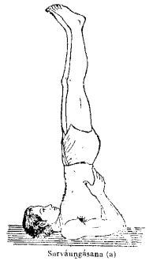
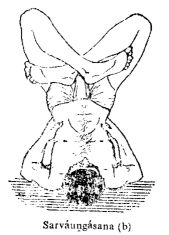
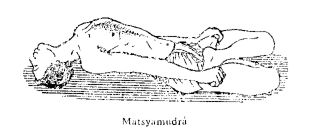
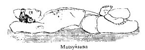
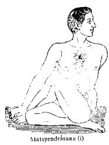
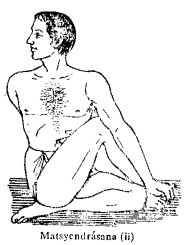
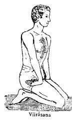
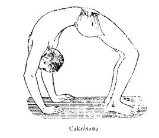
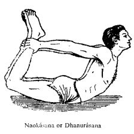
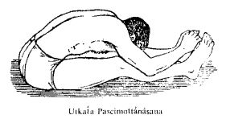
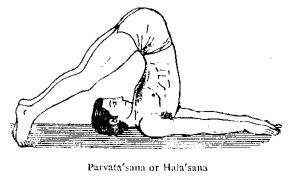
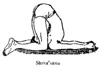
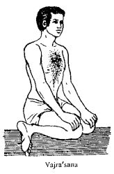
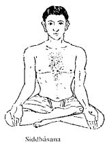
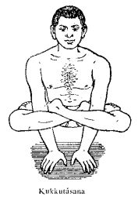
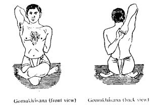
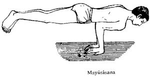

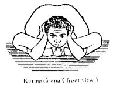
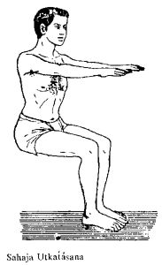
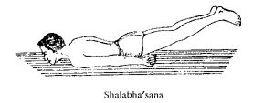
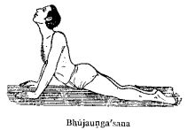
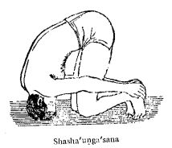
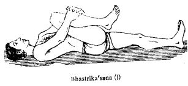
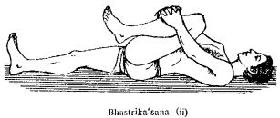
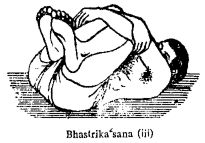
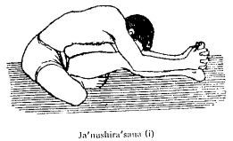
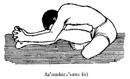
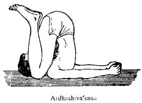
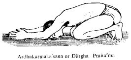
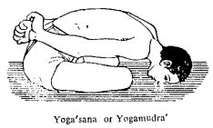
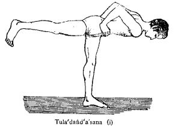
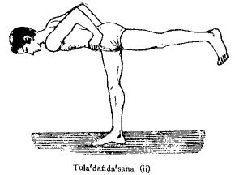
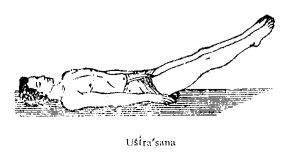
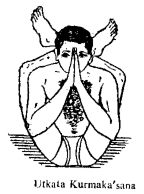
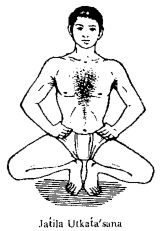
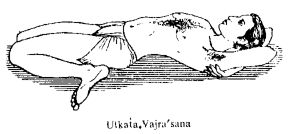
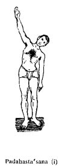
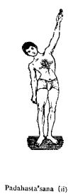
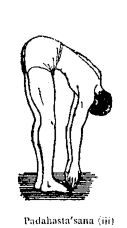
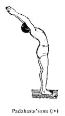
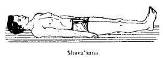
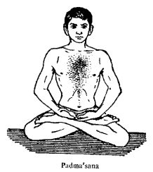
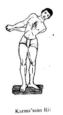
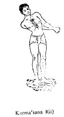
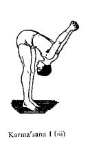
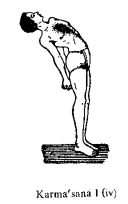
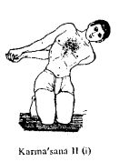
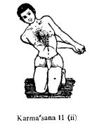
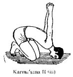
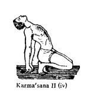